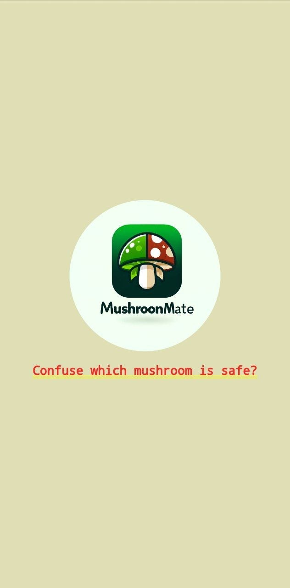
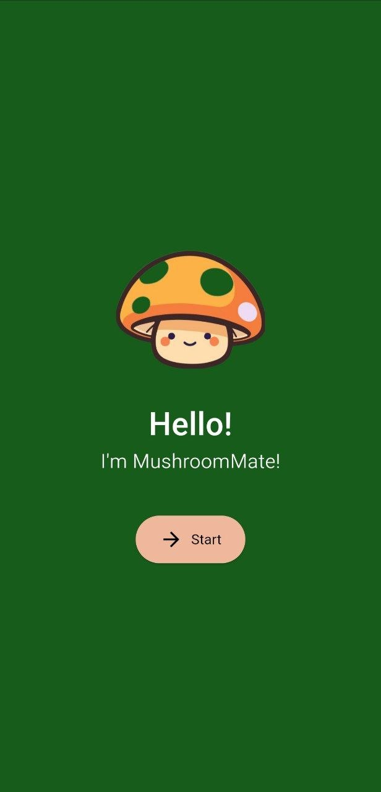
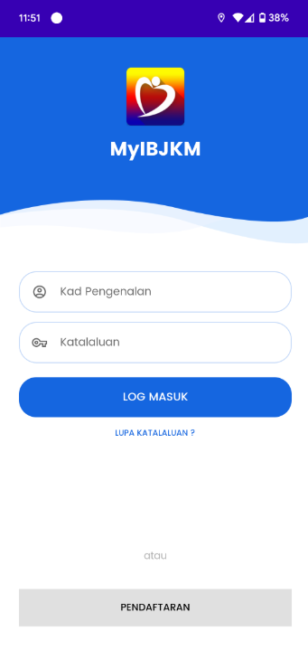
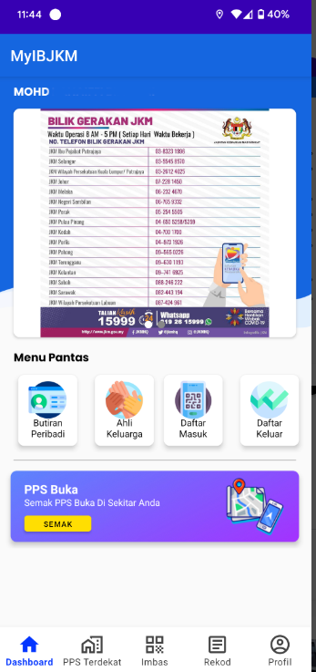

Featured Projects


MushroomMate
FYP Project350+ species classified · 95% accuracy
AI-powered mobile app that distinguishes poisonous from edible mushrooms in real time using Convolutional Neural Network(CNN) Algorithm.


MyIBJKM
PublishediOS + Android · Native (separate codebases)
Comprehensive mobile application built natively for both iOS (SwiftUI in Xcode) and Android (Java in Android Studio), with platform-specific UX and performance optimization.


SKALA 2.0
In ProgressiOS + Android · Single codebase · BLoC
Cross-platform monitoring app for Jabatan Kerja Raya (JKR) to track project status and progress in real time. Built with Flutter using the BLoC pattern for clean state management — one codebase delivering native experiences on iOS and Android.
MushroomMate
FYP Project350+ species classified · 95% accuracy
Problem
Foragers and hikers in Malaysia frequently encounter unfamiliar mushrooms — some edible, some lethally toxic. Existing identification apps require an internet connection, but cellular signal in dense forests is unreliable. Misidentification can kill.
Approach
Trained a custom Convolutional Neural Network on a dataset of 350+ mushroom species, optimized for on-device inference. Deployed it as a Flutter app that runs the model entirely offline — point the camera at a mushroom and get a classification in under a second, no signal required.
Outcome
~95% classification accuracy on the held-out test set. Final Year Project submission, presented and demoed publicly. The offline-first approach proved that field-usable mobile AI is viable without cloud dependency.
Tech Stack
MyIBJKM
PublishediOS + Android · Native (separate codebases)
Overview
Comprehensive mobile application built natively for both iOS (SwiftUI in Xcode) and Android (Java in Android Studio), with platform-specific UX and performance optimization.
Tech Stack
SKALA 2.0
In ProgressiOS + Android · Single codebase · BLoC
Overview
Cross-platform monitoring app for Jabatan Kerja Raya (JKR) to track project status and progress in real time. Built with Flutter using the BLoC pattern for clean state management — one codebase delivering native experiences on iOS and Android.